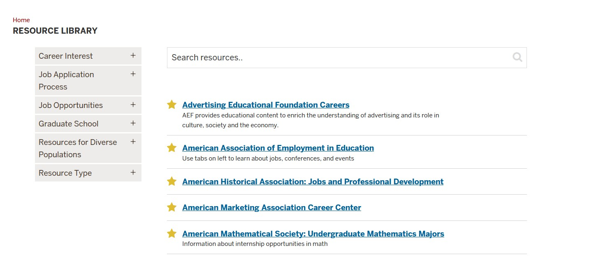
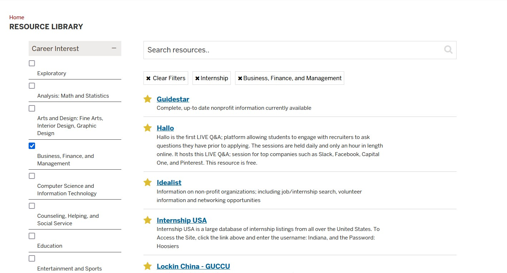
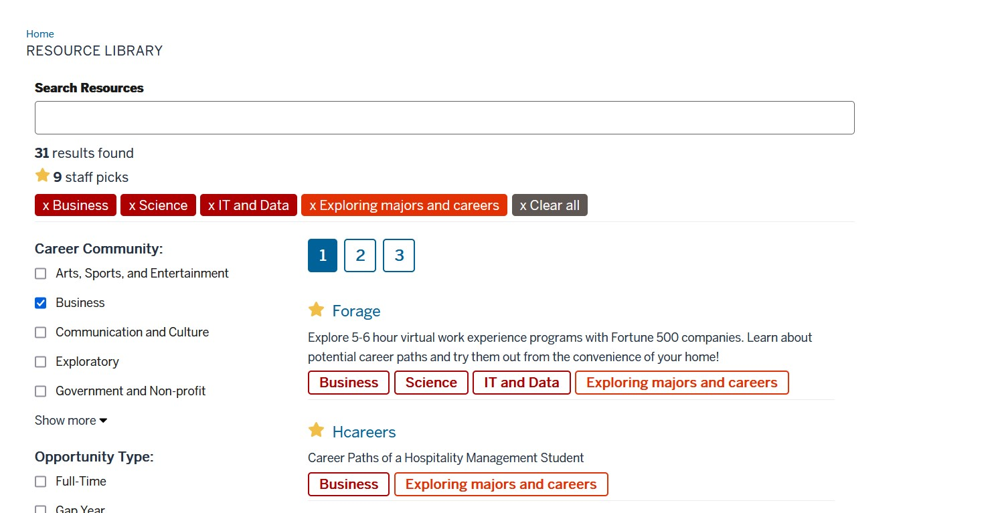

The Problem
The original resource library was difficult to maintain and update. All resources were stored in a JSON file, making it challenging for non-technical staff to add, edit, or remove resources. This created bottlenecks and limited the library's ability to stay current with new career resources.
Filtering Challenges
The original system had limited filtering capabilities, making it difficult for students to find relevant resources. The interface lacked intuitive ways to narrow down the nearly 400 resources by category, type, or other criteria.
The Solution
We migrated the data to Airtable, which provided a user-friendly interface for staff to manage resources, and redesigned the front-end to include improved filtering and search capabilities. The new system streamlined both the management and user experience.
